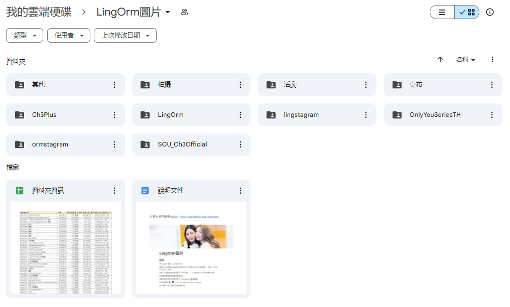
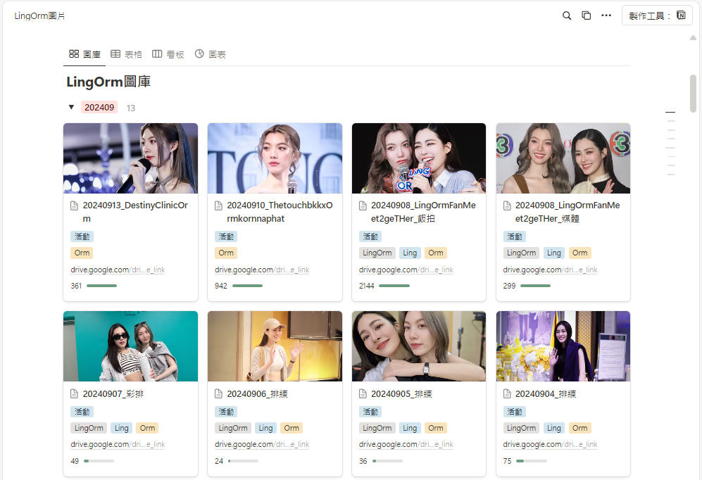

Google Drive
這個 Google 雲端共享資料夾包含從各平台（Twitter、Instagram、Weibo 等）下載的 LingOrm 圖片，來自各粉絲站的飯拍。圖片每日持續更新，目前約有 26,000 張，總容量約 15 GB。

Notion

在 Notion 我把每個活動建立獨立頁面，使用者可以透過圖庫或資料庫表格等多種篩選方式進行檢視。每個頁面包含數十張精選圖片，使用者能在一頁內完整瀏覽所有圖片，提升瀏覽體驗。
